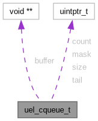

uel_cqueue_t Struct Reference
Defines a circular queue of void pointers. More...
Collaboration diagram for uel_cqueue_t:

Data Fields | |
| void ** | buffer |
| The buffer that will contain the enqueued values. | |
| uintptr_t | size |
| The size of the queue. Must be a power of two. | |
| uintptr_t | mask |
| uintptr_t | tail |
| The position that indicates where the oldest enqueued element is. | |
| uintptr_t | count |
Detailed Description
Defines a circular queue of void pointers.
The circular queue implementation provided is a fast and memory efficient FIFO data structure that holds void pointers.
Its capacity is required to be a power of two. This makes possible to use fast modulo-2 arithmetic when dealing with the queue indices.
Field Documentation
◆ count
| uintptr_t uel_cqueue_t::count |
The count of enqueued elements. New elements are put at (tail + count) % size.
◆ mask
| uintptr_t uel_cqueue_t::mask |
The mask used to wrap the indices around the capacity of the queue when they are incremented during pushs/pops
The documentation for this struct was generated from the following file:
- include/uevloop/utils/circular-queue.h
Generated by